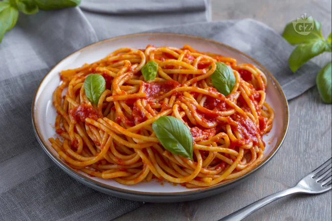

Ingredients:
- 320 gr spaghetti
- 2 tablespoon olive oil
- 1 medium sized onion
- 1 can of tomatoes
- salt to taste
Steps:
- Finely dice the onion.
- Heat the oil in a pan over a medium heat. Put the onion into the heated pan and sweat it.
- When the onion is translucent, add the tomatoes. Let the sauce cook and reduce for 15 min.
- Cook the spaghetti in plenty of boiling salted water according to the package instructions.
- When the pasta is just shy of al dente, drain the pasta and mix it with the sauce.
- If you like it, tear a bunch of basil into the pasta.
- Serve the pasta piping hot and enjoy.